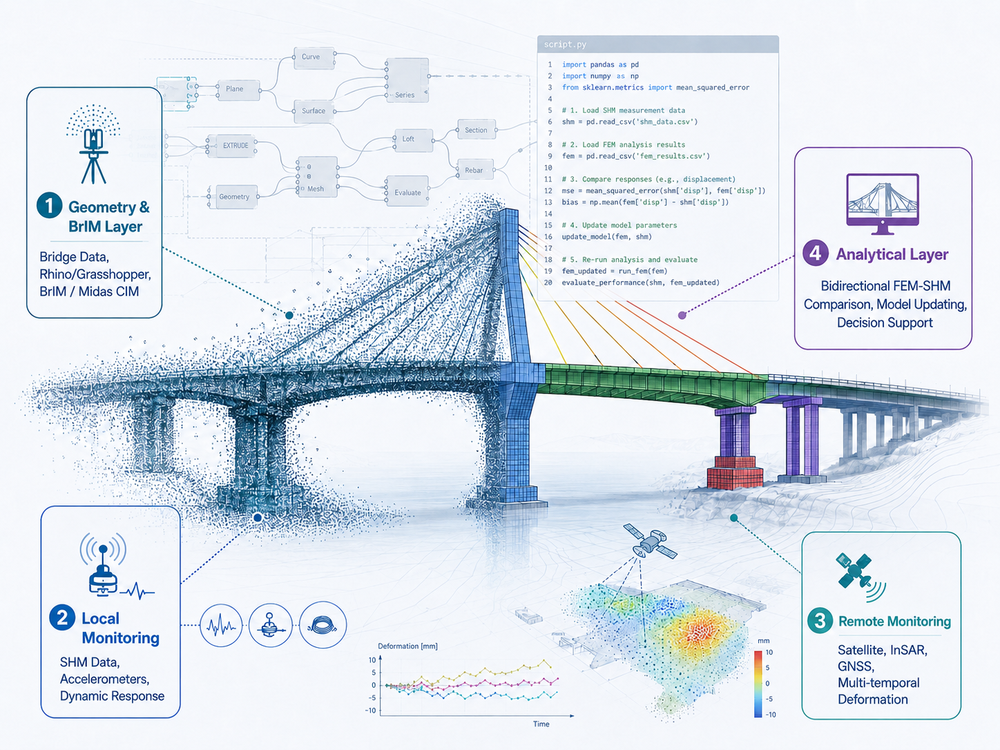

About
Alfredo Restuccia Garofalo is an engineer and PhD Candidate at the Department of Civil, Environmental, Land, Construction and Chemistry (DICATECh), Polytechnic University of Bari, Italy. His research focuses on digital and computational workflows for the modelling, analysis and management of existing bridges and infrastructures.
His work integrates geometric and information modelling, parametric modelling in Rhinoceros/Grasshopper, BrIM environments, FEM analysis and Python-based automation, with the aim of supporting operational Bridge Digital Twins and evidence-based decision-making for life-cycle infrastructure management.
Research Interests
Digital modelling and BrIM
- Bridge Information Modelling for existing bridges
- Parametric modelling with Rhinoceros and Grasshopper
- Midas CIM workflows and information sheets
- Interoperability between BrIM and FEM environments
FEM, SHM and decision support
- Midas Civil/FEM modelling and structural assessment
- Structural Health Monitoring data integration
- Python scripts for FEM–monitoring comparison
- Digital Twin updating and life-cycle bridge management
Current Research Framework
The current research framework focuses on the generation of operational Bridge Digital Twins through the integration of BrIM/Midas CIM, Midas Civil/FEM, multi-source monitoring and Python-based data fusion. The central idea is a bidirectional workflow: monitoring data validate and update the numerical model, while the FEM model provides thresholds, indicators and interpretative scenarios for decision support.

Selected Publications
Contribution on a computationally feasible Scan-to-BrIM workflow for generating a high-detail parametric model of a steel pedestrian bridge from point clouds, with downstream FEM-oriented applications.
Contribution on point cloud processing, geometric simplification and parametric object generation in Rhinoceros/Grasshopper for BIM-oriented workflows.
Editorial Activity
Proposed Special Issue – Sustainability (MDPI)
Sustainable Bridge Digital Twins: BrIM, Multi-Source Monitoring and FEM-Based Decision Support for Life-Cycle Management
The Special Issue aims to collect contributions on Bridge Digital Twins, BrIM, multi-source monitoring, SHM, satellite/InSAR monitoring, FEM model updating, Python-based decision support and life-cycle bridge management.
Contact
Ing. Alfredo Restuccia Garofalo
Department of Civil, Environmental, Land, Construction and Chemistry (DICATECh)
Polytechnic University of Bari, Bari, Italy
Email: ingrestucciachristian@gmail.com
Profiles such as ORCID, Google Scholar, Scopus Author ID and ResearchGate can be added here when available.